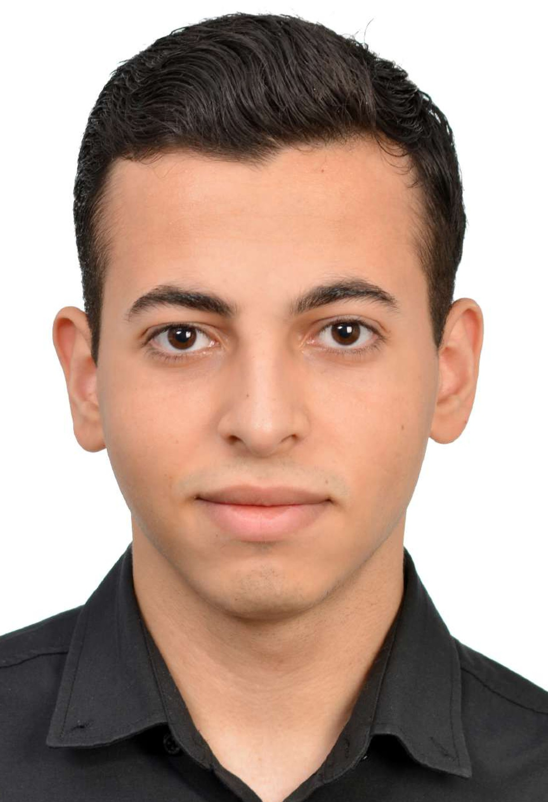

I am an Electrical & Electronics Engineering student at Abdullah Gül University, Kayseri, Turkey, with a GPA of 3.42 / 4.00. My work sits at the intersection of embedded systems, machine learning, and IoT, with a focus on building end-to-end technical solutions that perform in real-world environments.
As an ML engineer, I specialize in deep learning for classification and signal processing. At MTM Biotech, I developed a CNN-based model achieving 82% accuracy in decoding hand gestures from EMG signals — enabling individual finger control on a prosthetic arm. I applied wavelet transformation for feature extraction and managed the full pipeline from raw data collection to real-time hardware inference.
As an embedded systems engineer, I design and deploy hardware-software solutions using microcontrollers and IoT platforms. At Four Mansions Hotel, I built a remote gate opener using ESP32 and Blynk IoT, optimized industrial lighting infrastructure, and developed a Python-based competitor pricing intelligence tool — all in a live production environment.
Research & Projects: I am currently developing AI-powered smart glasses for visually impaired users, combining YOLO-based real-time object detection with directional 3D audio feedback on a Raspberry Pi. Recent academic projects include deep learning classification of breast cancer histopathological images, heart disease prediction, and a PAM digital equalization system achieving ~22 dB SNR.
Background: I am fluent in Arabic (native), English, and Turkish. I am passionate about applying engineering to problems that matter — from prosthetics to accessibility technology to energy optimization.